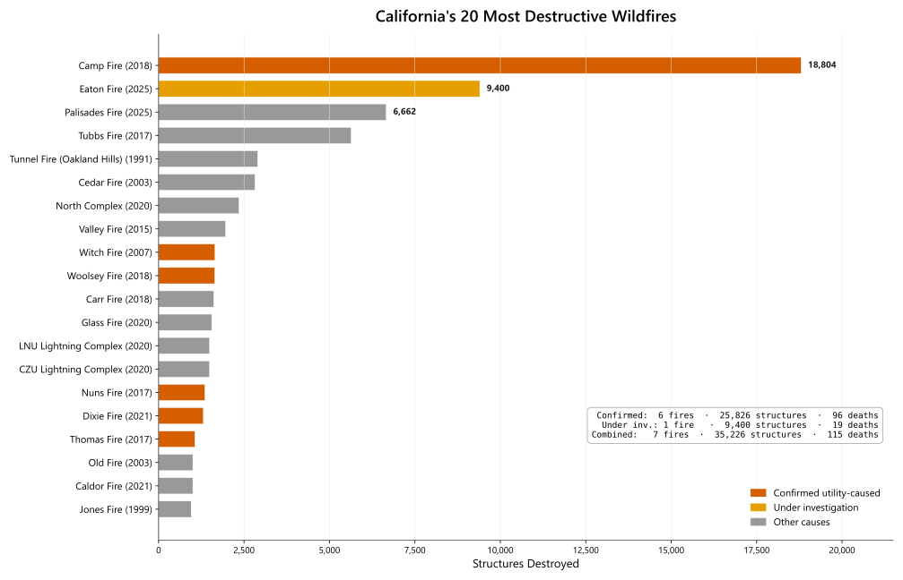
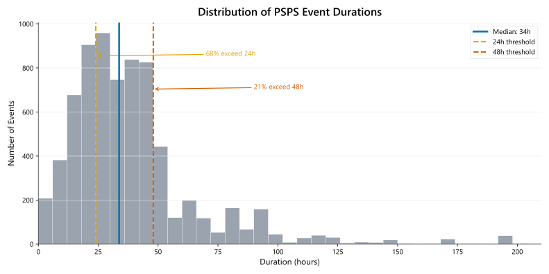
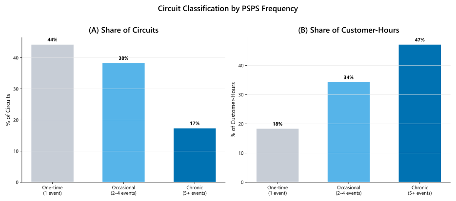
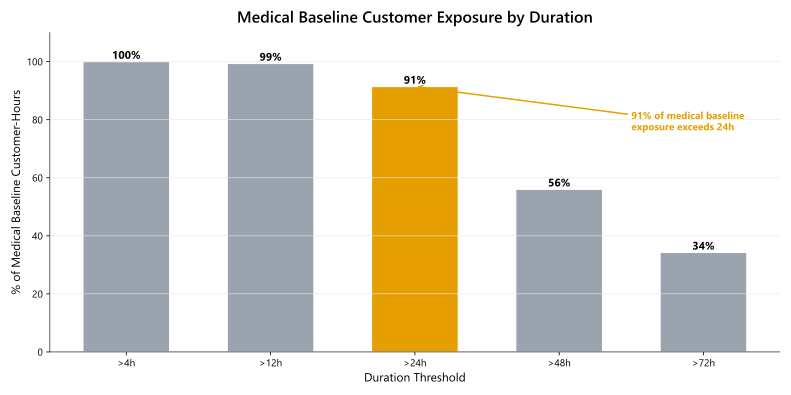
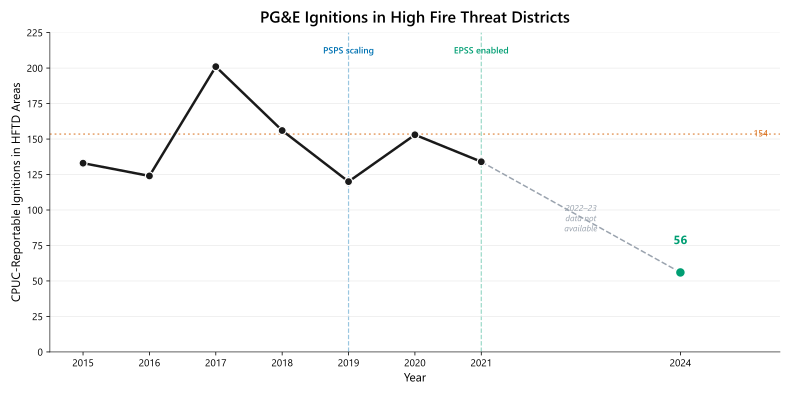

A Data-Driven Analysis of PSPS Events, Utility Fires, and What We Still Don't Know
I. Introduction: The Stakes
Public Safety Power Shutoffs—intentional blackouts during high fire-risk weather—have become a defining feature of life in California's fire-prone regions. Utilities de-energize power lines to prevent equipment from sparking wildfires. The logic is straightforward: no electricity, no ignition. The trade-off is also straightforward: millions of Californians lose power, sometimes for days at a time.
Why do utilities shut off power at all? Because when utility equipment does cause fires, those fires tend to be catastrophic.
The Disproportionate Destruction Problem
Utility-caused fires represent a small fraction of California's total wildfire ignitions—roughly 5% in most years. But they account for a vastly disproportionate share of the most destructive fires. Of the 20 most destructive wildfires in California history (measured by structures destroyed), six were confirmed caused by utility equipment, with a seventh (the Eaton Fire) under investigation. The single most destructive fire in California history, the 2018 Camp Fire, was caused by a utility.
 Figure 1: California's 20 most destructive wildfires. Confirmed utility-caused fires (red), under-investigation fires (amber), and other causes (gray). This classification includes only fires where CAL FIRE or CPUC investigations attributed ignition to utility-owned transmission or distribution equipment—not fires classified generally as "electrical" (which can include customer-owned equipment) or fires still under investigation.
Including the Eaton Fire (still under investigation), these seven fires destroyed more than 35,000 structures and killed 115 people—53% of all structures destroyed and 50% of all fatalities across the Top 20 list. Excluding the Eaton Fire, the six confirmed utility-caused fires account for 25,826 structures (39%) and 96 fatalities (42%). The Camp Fire alone destroyed 18,804 structures and killed 85 people; it remains the deadliest and most destructive wildfire in California history.
| Fire | Year | Service Area | Structures Destroyed | Fatalities |
|---|---|---|---|---|
| Camp Fire | 2018 | PG&E | 18,804 | 85 |
| Eaton Fire* | 2025 | SCE | 9,400 | 19 |
| Witch Fire | 2007 | SDG&E | 1,650 | 2 |
| Woolsey Fire | 2018 | SCE | 1,643 | 3 |
| Nuns Fire | 2017 | PG&E | 1,355 | 3 |
| Dixie Fire | 2021 | PG&E | 1,311 | 1 |
| Thomas Fire | 2017 | SCE | 1,063 | 2 |
| Confirmed subtotal | 25,826 | 96 | ||
| Combined total | 35,226 | 115 |
Table 1: Utility-caused and under-investigation fires in California's Top 20 most destructive. Eaton Fire cause under investigation as of the date of this report; SCE equipment involvement alleged in litigation but not officially determined.
Why are utility fires so destructive? The answer lies in timing. Utility ignitions during extreme wind events—Diablo winds in Northern California, Santa Ana winds in the south—produce fast-moving fires that overwhelm evacuation and suppression capacity. A fire that starts at 2 AM during 60 mph winds can consume entire neighborhoods before residents wake up. The conditions that make utility equipment most likely to fail (high winds, dry vegetation) are the same conditions that make fires impossible to contain.
This context explains why PSPS exists—and why understanding its patterns matters.
This Analysis
This report examines 7,150 PSPS circuit-events recorded by California's three largest investor-owned utilities (PG&E, SCE, and SDG&E) between 2013 and early 2025. Some customer-hours analyses use a subset of circuit-events with valid duration and customer counts (n = 6,542).
Terminology note: This report uses circuit-event as the unit of analysis: one distribution circuit de-energized for a contiguous shutoff period. A single PSPS "weather event" typically triggers dozens or hundreds of circuit-events across multiple days as utilities shut off and restore power to different areas.
Key findings from this analysis:
- The median PSPS event lasts 34 hours—68% exceed 24 hours
- The top 20% of circuits account for 73% of all customer-hours lost
- 91% of medical baseline customer exposure occurs during events longer than 24 hours
- About 67% of PSPS customer-hours in the dataset occur in October alone (66.7% with hour-level allocation; n = 6,542)
Taken together, this suggests a relatively concentrated period of exposure for a relatively specific part of the state (i.e. Sierra Nevada foothills, Nevada/Yuba/Lake counties, and Sonoma/Napa wine country in the north; San Gabriel/San Bernardino mountain and Malibu coast areas in the south).
| Month | % of Customer-Hours |
|---|---|
| January | 19.3% |
| February | <0.1% |
| March | <0.1% |
| April | <0.1% |
| May | <0.1% |
| June | 0.7% |
| July | <0.1% |
| August | 1.4% |
| September | 5.0% |
| October | 66.7% |
| November | 3.4% |
| December | 3.5% |
Table: Monthly distribution of PSPS customer-hours (n = 6,542 circuit-events with valid duration and customer data; 608 records excluded for missing customer counts or invalid durations). Customer-hours are allocated at the hour level across calendar months (events spanning month boundaries are split proportionally by hours in each month). Data from CPUC PSPS event reports, 2013-2025.
The concentration is sharp enough to be operationally useful—October is the month to prepare for—but not so complete that other months can be ignored. September, November, December, and January together account for roughly 31% of customer-hours, and individual years can shift significantly depending on when wind events arrive. Within fire season, utilities have limited ability to predict whether the worst week will fall in late September or late October, which means sustained readiness across a multi-month window rather than a single-month surge.
These patterns have concrete implications:
- Backup power planning should target 48–72 hours, not 24 hours. The median event already exceeds a day; one in five exceeds two days.
- Infrastructure investment should target chronic circuits. The 394 circuits with five or more events account for nearly half of all customer-hours—a tractable number for grid hardening prioritization.
- Program design should weight by risk and burden. Medical baseline customers, renters, and residents in remote areas face compounding disadvantages during multi-day outages. Most utility battery rebate programs offer a fixed dollar amount regardless of the customer's circumstances—same rebate whether you're a homeowner in a suburb or a renter on a chronic circuit. That structure tends to be claimed by people who can already afford installation and navigate the process, while the populations bearing the most PSPS burden (renters who need landlord approval, low-income households who can't cover the remaining cost, medically vulnerable customers who need specifically sized systems) face barriers a flat rebate doesn't address.
- Operational surge capacity should plan for October. Two-thirds of all customer-hours concentrate in a single month, which creates a predictable but intense window for utility crews, emergency services, and community resilience centers.
The data also reveals what PSPS reporting can and cannot tell us about wildfire prevention.
II. The Duration Problem
PSPS events last far longer than most people assume—and far longer than most backup systems can handle.
The median PSPS event in our dataset runs 34 hours. That's not "about a day"—it's a day and a half. One in five events exceeds 48 hours. One in ten exceeds 72 hours. The longest events in the dataset stretch past eight days.
 Figure 2: Distribution of PSPS event durations. The median (34 hours) exceeds typical battery capacity. Reference lines show 24-hour and 48-hour thresholds.
Why Duration Matters
A 34-hour outage is qualitatively different from a 6-hour outage. At 6 hours, you eat the food in your refrigerator, light some candles, and wait. At 34 hours, the food in your refrigerator and freezer is spoiling. If you depend on electricity for medical equipment—an oxygen concentrator, a CPAP machine, a powered wheelchair—you've exhausted your battery backup and are now making difficult decisions.
The duration distribution has direct implications for backup power planning:
| Backup Capacity | Share of Events Covered |
|---|---|
| 12 hours (typical home battery) | 8% |
| 24 hours | 32% |
| 48 hours | 79% |
| 72 hours | 90% |
Table 2: Backup power capacity and PSPS coverage. A 24-hour battery covers less than one-third of events.
How does this compare to what Californians are actually installing? SGIP (Self-Generation Incentive Program) data provides an answer. Of the 43,187 active residential battery systems in California's SGIP database, the median capacity is 13.2 kWh—one Tesla Powerwall. At a conservative 1 kW essential load, that's roughly 13 hours of backup. Three-quarters of installed systems are under 24 kWh; 99% are under 48 kWh.
| Capacity Threshold | % of SGIP Residential Systems | PSPS Events Outlasting This Capacity |
|---|---|---|
| < 12 kWh | 35% | 92% |
| < 24 kWh | 74% | 68% |
| < 48 kWh | 99% | 21% |
| ≥ 48 kWh | 1.1% (476 systems) | — |
Table 2b: Installed residential battery capacity (SGIP, as of January 2026, n = 43,187 active systems) vs. PSPS event durations. The vast majority of installed batteries would be exhausted during the majority of PSPS events. Source: SGIP Weekly Statewide Report, selfgenca.com.
The median installed capacity has been essentially unchanged since 2019—13.2 kWh every year. Even in areas that have experienced two or more PSPS events, where residents presumably have the strongest motivation to size for resilience, only 3,400 SGIP battery systems are installed, and their median capacity is the same 13.2 kWh. Just 28 of those systems have enough capacity to last 48 hours.
This confirms that planning targets should be 48-72 hours, not the commonly assumed 24 hours—and that the gap between what people are installing and what PSPS events actually demand is enormous.
Duration by Utility
PSPS durations vary by utility, reflecting differences in territory, wind patterns, and operational practices:
| Utility | Events | Median Duration | Mean Duration | 90th Percentile |
|---|---|---|---|---|
| PG&E | 5,348 | 36 hours | 42 hours | 77 hours |
| SCE | 1,485 | 29 hours | 34 hours | 65 hours |
| SDG&E | 317 | 32 hours | 38 hours | 70 hours |
Table 3: PSPS duration statistics by utility.
PG&E's longer durations likely reflect its vast, mountainous Northern California territory, where circuits often traverse remote terrain that requires extensive patrol before re-energization. SDG&E, which pioneered PSPS in 2013 following devastating 2007 fires, has the smallest footprint but serves terrain with intense Santa Ana wind exposure.
The middle 50% of all events fall between 22 and 47 hours. The mean (40 hours) exceeds the median due to a long tail of multi-day events—those 10% of events exceeding 72 hours pull the average upward.
III. The Concentration Problem
PSPS exposure is not distributed evenly across California's grid. A small fraction of circuits accounts for most of the customer impact—which means targeted investments could yield outsized returns.
When we rank all 2,294 affected circuits by their total customer-hour exposure, the concentration is striking. The top 10% of circuits (229 circuits) account for 47% of all customer-hours lost. The top 20% (459 circuits) account for 73%. The bottom half of circuits—1,147 circuits—account for just 5% of total exposure.
 Figure 3: PSPS exposure is highly concentrated. (A) Lorenz curve showing Gini coefficient of 0.70. (B) Top 25 circuits by customer-hours.
Figure 3: PSPS exposure is highly concentrated. (A) Lorenz curve showing Gini coefficient of 0.70. (B) Top 25 circuits by customer-hours.
The Gini coefficient of 0.70 indicates that PSPS burden is concentrated enough to be targetable. The top 459 circuits account for roughly three-quarters of all customer-hours—a manageable number for prioritized action within existing regulatory processes. California utilities already file Wildfire Mitigation Plans and pre-/post-season PSPS reports with the CPUC; requiring a short "high-burden circuits" annex in those filings—listing the top circuits by customer-hour exposure and the actions planned to reduce that exposure through prevention or faster restoration—would create accountability without adding a new reporting framework. For example, the CPUC could require each utility to identify its top 100 customer-hour circuits in annual WMP updates and report year-over-year changes in exposure for those circuits. That said, which circuits rank highest shifts somewhat year to year depending on weather and fire conditions, so any prioritization list should be updated annually rather than treated as fixed.
Chronic Circuits
Some circuits experience PSPS repeatedly; others have been shut off only once. We classified circuits into three categories:
| Category | Definition | % of Circuits | % of Customer-Hours |
|---|---|---|---|
| One-time | 1 event | 46% (1,056) | 13% |
| Occasional | 2-4 events | 37% (844) | 39% |
| Chronic | 5+ events | 17% (394) | 48% |
Table 4: Circuit classification by PSPS frequency.
Chronic circuits represent just 17% of affected circuits but account for 48% of all exposure. The most-affected circuit in the dataset has experienced 94 separate PSPS events over the study period.
 Figure 4: Circuit classification by PSPS frequency. Chronic circuits (5+ events) are 17% of circuits but 48% of customer-hours.
Year-over-year analysis shows substantial consistency in which circuits rank highest. Circuits appearing in the top 50 one year have a 15-20% chance of appearing in the top 50 the following year (calculated by ranking circuits by annual customer-hours within each year, excluding 2022 due to the data gap, and measuring overlap in the top-50 list across adjacent year-pairs). The core set of high-exposure circuits is relatively stable, supporting the case for targeted infrastructure investment.
The concentration pattern suggests that grid hardening investments—undergrounding, covered conductor, sectionalizers—should be prioritized by customer-hour exposure, not just cost or geographic coverage. The data to make these prioritization decisions exists; the remaining challenge is translating circuit-level exposure metrics into investment frameworks that utilities and regulators can act on consistently.
IV. The Vulnerable Population Problem
Medical baseline customers—those depending on electricity for life-sustaining equipment like oxygen concentrators, ventilators, and dialysis machines—face disproportionate risk during PSPS events. The duration problem becomes a life-safety problem for this population.
California utilities track medical baseline customers separately in PSPS reporting. When we analyze the distribution of medical baseline customer-hours by event duration, a troubling pattern emerges: 91% of medical baseline exposure occurs during events exceeding 24 hours.
 Figure 5: Share of medical baseline customer-hours beyond each duration threshold. 91% of exposure occurs in events exceeding 24 hours.
| Duration Threshold | % of Medical Baseline Customer-Hours |
|---|---|
| > 4 hours | 100% |
| > 12 hours | 99% |
| > 24 hours | 91% |
| > 48 hours | 56% |
Table 5: Medical baseline customer exposure by duration.
The 91% figure has a direct policy implication: battery rebate programs targeting medical baseline customers with 24-hour backup capacity address only about 9% of their actual PSPS exposure. The typical program design—helping customers acquire a battery that lasts a day—leaves them vulnerable during precisely the events most likely to affect them.
What This Means in Practice
A medical baseline customer with a 24-hour battery backup faces a specific scenario during the majority of PSPS events: the battery runs out while the power is still off. At that point, they must either leave their home (often difficult for those with mobility limitations or complex medical equipment), rely on community resilience centers (which may be distant or at capacity), or simply go without life-sustaining equipment.
The program design implication is clear: medical baseline programs should target 48-72 hour capacity, fund community resilience centers as a backup, and provide proactive outreach during extended events—not just pre-event notification.
V. The Question This Analysis Can't Answer
Everything documented above—the duration problem, the concentration of exposure, the battery gap, the burden on medical baseline customers—describes the cost side of PSPS. But there is a harder question that this dataset alone cannot resolve: is it working?
Something appears to be working. PG&E's reportable ignitions in High Fire Threat Districts have declined in recent years. The trend is encouraging. But between 2018 and 2024, utilities deployed PSPS alongside half a dozen other interventions—EPSS automatic shutoffs, accelerated vegetation management, undergrounding, covered conductor, expanded weather monitoring—all on overlapping timelines, against a backdrop of year-to-year weather variation.
 Figure 6: PG&E ignitions in High Fire Threat Districts, 2015-2024. Multiple interventions were deployed during this period; attribution to any single intervention is not possible from this data.
The ignition decline is real. Which interventions deserve credit—and how much—is not something aggregate trend data can answer. That question requires a different kind of analysis, one that can disentangle overlapping interventions and control for weather. It is the subject of a forthcoming companion piece.
VI. Data and Methods
Data Sources
PSPS Event Data: Circuit-level PSPS event data reported to the California Public Utilities Commission (CPUC) by investor-owned utilities, 2013-2025. Raw dataset contains 7,243 records; after cleaning, 7,150 circuit-events.
Fire Cause Data: CAL FIRE Top 20 Most Destructive Wildfires list, supplemented with cause determinations from CAL FIRE investigation reports, CPUC proceedings, and news coverage.
Utility Ignition Data: CPUC Fire Incident Reports (2014-2024) and utility Wildfire Mitigation Plan filings. HFTD classification based on CPUC Fire-Threat Map (Tier 2 and Tier 3 areas).
Battery Storage Data: SGIP Weekly Statewide Report (as of January 26, 2026), downloaded from selfgenca.com. Contains 106,217 incentive application records; analysis filtered to 43,187 active (non-cancelled) residential energy storage systems.
Data Processing
- Circuit name standardization: Merged 1,141 duplicate names due to inconsistent formatting (hyphens, spaces, capitalization)
- Utility name normalization: Standardized to PG&E, SCE, SDG&E
- Transmission exclusion: Removed 631 records for transmission infrastructure (identified by "KV" in circuit names). This heuristic may imperfectly distinguish transmission from distribution; results should be interpreted as distribution-focused.
- Duration filtering: Excluded records with invalid durations (—0 or >500 hours)
- Medical baseline cleaning: Imputed missing values using circuit-level averages where available. This imputation may introduce bias if missingness is non-random across utilities or time periods.
Key Metrics
Customer-hours = Customers affected × Duration in hours. This metric captures total disruption magnitude better than customer counts or event counts alone.
Gini coefficient = Standard measure of distribution inequality, calculated from the Lorenz curve. Values range from 0 (perfect equality) to 1 (perfect inequality).
Known Limitations
| Issue | Impact |
|---|---|
| 2022 data gap | Only 14 events recorded; likely data reporting issue rather than actual reduction |
| Pre-2017 HFTD data | HFTD ignition counts not available before 2015; trend analysis limited |
| January 2025 LA fires | Eaton Fire data preliminary; final attribution pending investigation |
| ENERGY circuit (SCE) | 94 events; may be data entry artifact rather than single physical circuit |
| County assignments | Approximated from circuit name prefixes |
Igor Geyn | CPUC PSPS Event Reports, CAL FIRE, CPUC Fire Incident Data | January 2026